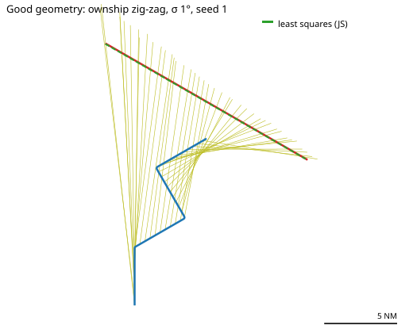
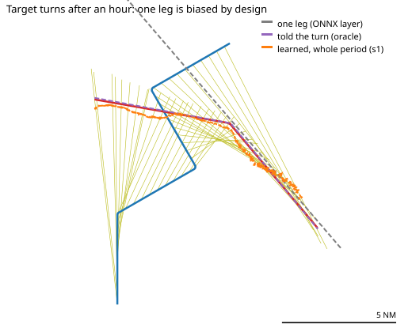
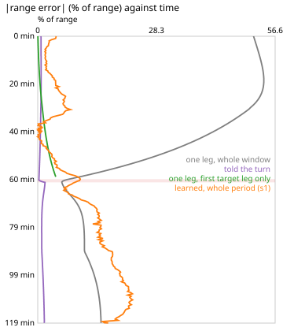
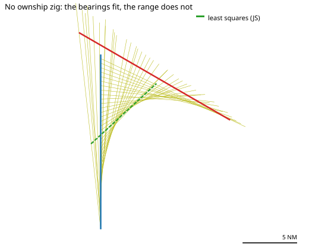

An interactive TMA demonstrator
2026-11-21 · spec 035 · gitma2 · open the page
Drag, narrow, solve
- Blue ownship, red target: drag a waypoint (it moves alone) or a leg's handle (the rest swings)
- Steady-rate turns; σ, reseed, sample interval
- A time-late solve over the window on release, in a worker
- The URL holds the scenario; JSON in and out, checked against LinkML

Four solvers, one contract
- Least squares (JavaScript): spec 021's port, equal to Python's on golden vectors
- Physics layer (ONNX), one leg
- Physics layer told the true manoeuvre times: an oracle, labelled so
- Spec 016's whole-period learned model, three seeds, time-late
solve(TmaProblem) → TmaSolution; both types in LinkML (schema 0.37.0)
The headline lesson: model mismatch


One leg over a turn: 33% RMS range error. Told the turn: 1.0%. One leg on the first target leg: 1.8%. Learned, whole period: 12%.
Unobservable, and flagged

- Residuals 1.01 σ: the bearings fit
- Range error 130%: the range does not
- The learned model (orange): 5.8%, from its prior
- Observability red: the bound on range is unbounded
Not achieved
- The learned model is easily out of its training range (2–20 km); it misses the 40° turn
- The ONNX layer thins two hours to 720 rows
- No Monte Carlo spread, no continuous recompute, no
ctl
Next (owner's choice)
- A spread over several noise draws
ctl in the browser- The joint solve across gaps
Figures: scripts/research/demo_charts.mjs, sidecars beside each SVG